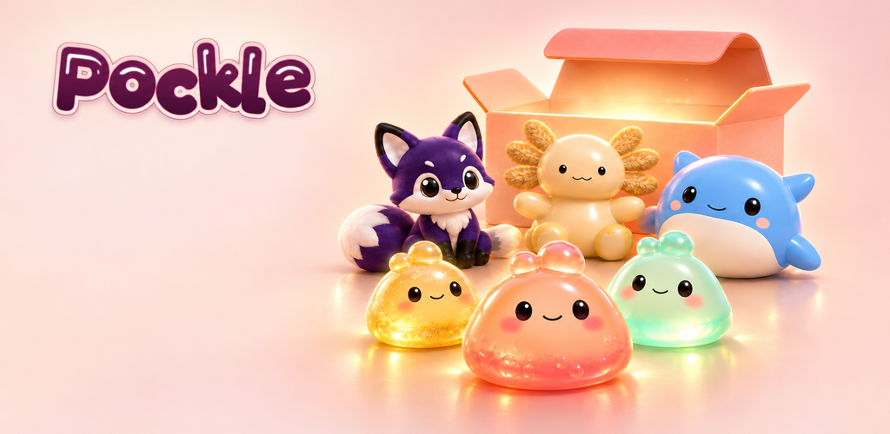
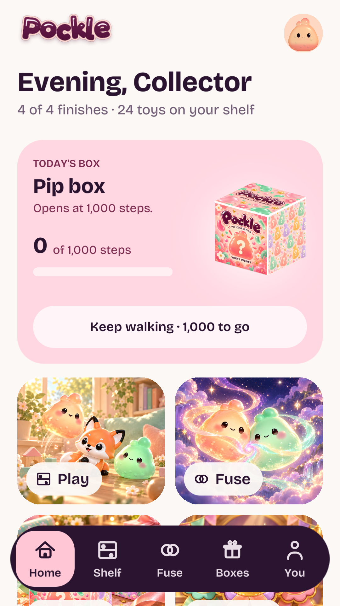
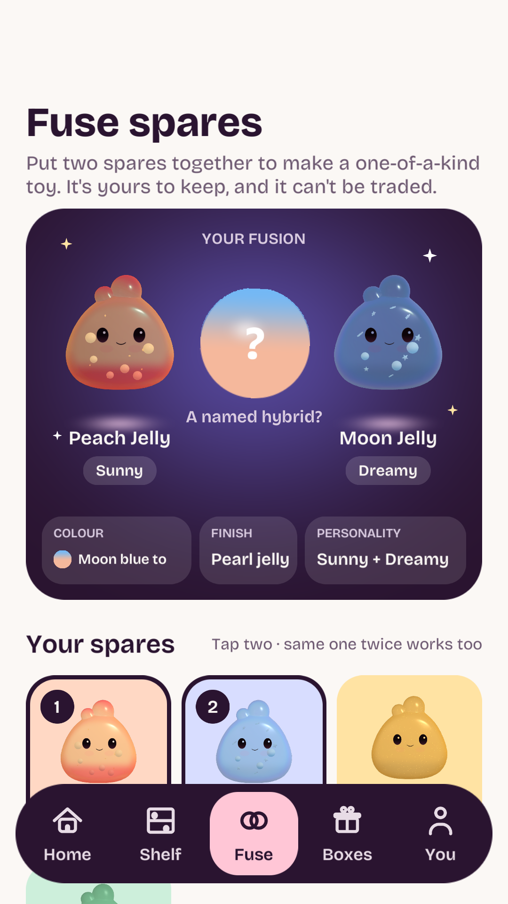

Google Play · Review 01Little toys. Ready to discover.
Prepared for review, November 8. The feature artwork and approved icon sit alongside four real Unity screenshots. Nothing has been uploaded to the store.
Feature graphic

1024 × 500 · RGB PNG · Promotional artwork Download
Approved app icon

512 × 512 · RGB PNG · Download
Recommended screenshot sequence
1080 × 1920 portrait PNGs. Native HUD and 3D models, rendered in Unity 6000.6.5f1 using an offline sample collection. These are editor captures, not phone screenshots.
Box and walking-box issues are deferred as requested. Home and Fusion captures are held out of the recommended set pending a separate UI review.
Held captures — reference only

Home: existing collection-count copy needs review.
Fusion: existing preview presentation needs review.